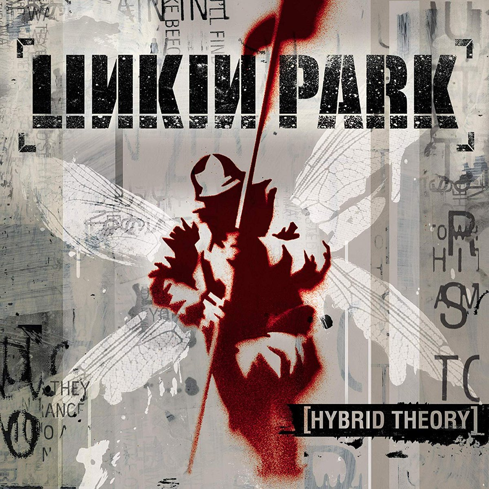
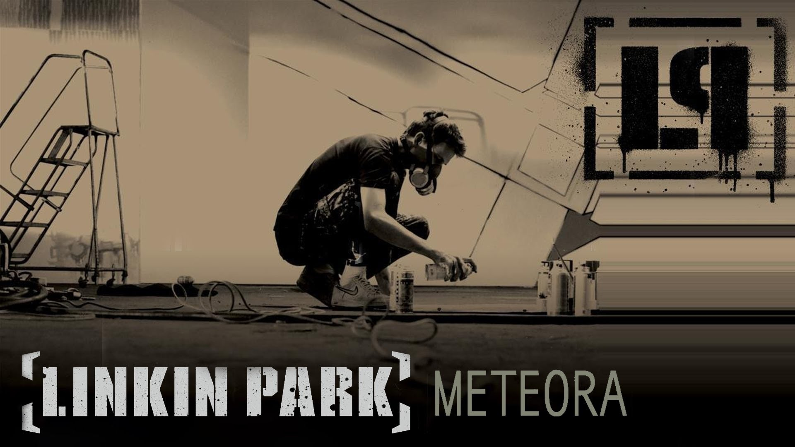
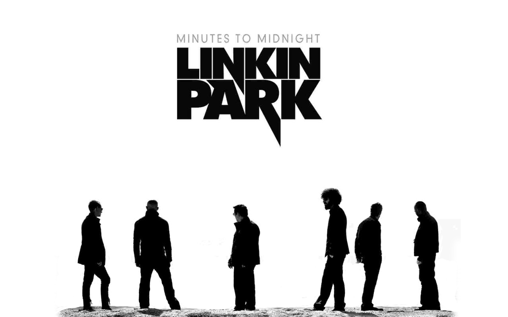
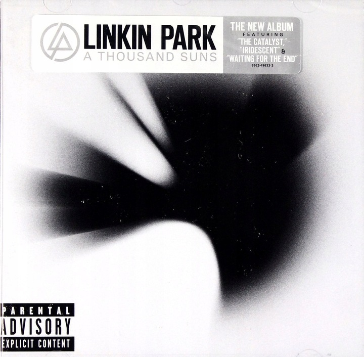
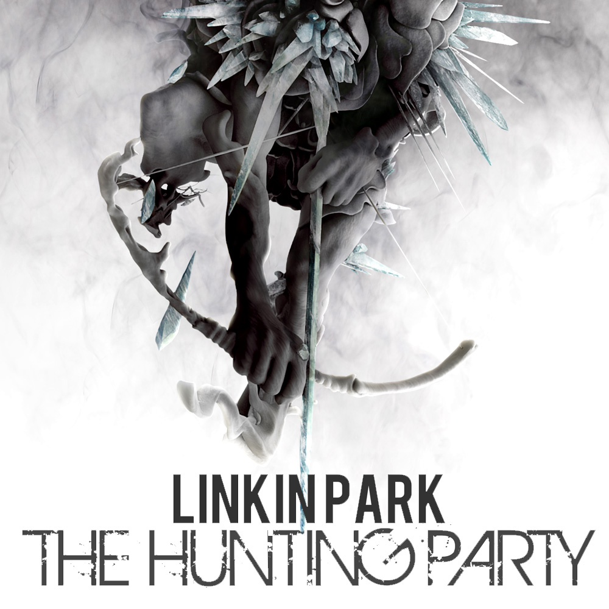
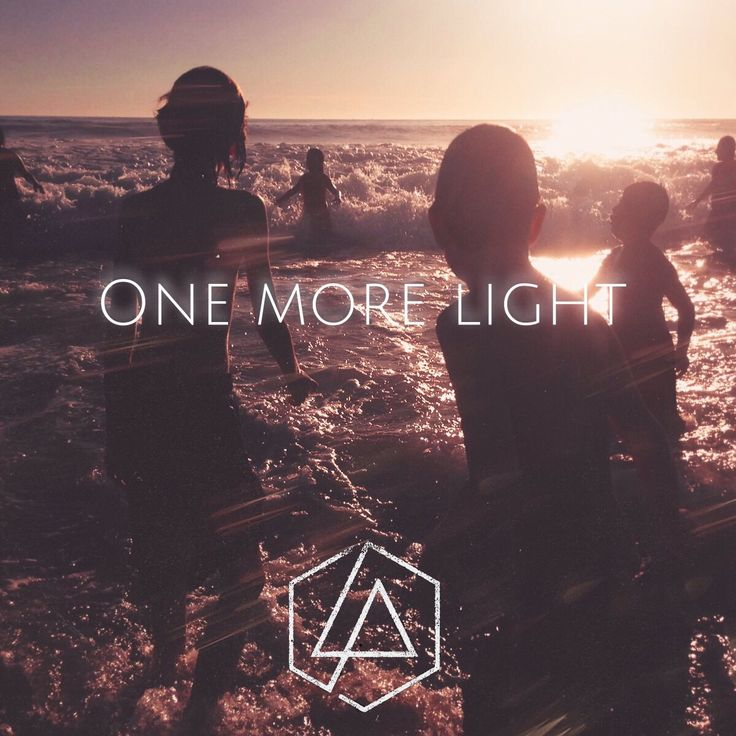

ÁLBUNS DE ESTÚDIO
Principais trabalhos, que alavancaram o sucesso e colocaram o Linkin Park como uma das maiores bandas do século 21.

- Papercut
- One Step Closer
- With You
- Points of Authory
- Crawling
- Runaway
- By Myself
- In the End
- A Place For My Head
- Forgotten
- Cure for the Itch
- Pushing Me Away
- My December
- High Voltage
HYBRID THEORY
Lançamento: 2000
“Hybrid Theory” é o primeiro álbum da banda, e que marcou uma época. Os quatro singles retirados de seu repertório foram direto para o topo das paradas, fazendo de “Hybrid Theory” o álbum mais vendido no ano seguinte de seu lançamento. Acumulou indicações ao Grammy Awards de 2002, levando o prêmio de “Melhor Performance Hard Rock” por “Crawling”. Definitivamente era um disco que dialogava com a sua época, um hibrido de metal alternativo e hip hop que se alinhava ao que acontecia no nu metal, mas de uma forma própria e mergulhado até a cintura nas texturas eletrônicas.

- Foreword
- Dont Stay
- Somewhere I Belong
- Lying From You
- Easier to Run
- Faint
- Figure.09
- Breaking The Habit
- From The Inside
- Nobody´s Listening
- Session
- Numb
METEORA
Lançamento: 2003
Após ter lançado “Hybrid Theory” (2000) e se transformado em uma das bandas de rock mais importantes do início do século, o Linkin Park caiu na estrada e, nos intervalos dos compromissos de turnê, os músicos começaram a trabalhar em músicas para o segundo disco, que viria a ser “Meteora”. Entre abril e dezembro de 2002, “Meteora” foi gravado com a produção de Don Gilmore e co-produção da própria banda. Musicalmente, “Meteora” soa como uma sequência natural de “Hybrid Theory”. É mais bem produzido e um pouco mais maduro, mas ainda traz o som que havia consagrado o Linkin Park anos antes: uma mistura entre elementos de nu metal, rap rock e, por que não, pop rock. A proposta era, sim, comercial, mas não abria mão da qualidade e continha identidade e sinceridade o bastante para refletir, em letras ou melodias, as angústias de uma nova geração de fãs de rock.

- Wake
- Given Up
- Leave Out All The Rest
- Bleed it Out
- Shadow Of The Day
- What I´ve Done
- Hands Held High
- No More Sorrow
- Valentine´s Day
- In Between
- In Pieces
- The Little Things Give You Away
MINUTES TO MIDNIGHT
Lançamento: 2007
Minutes to Midnight é o terceiro álbum de estúdio do Linkin Park. Foi lançado em 14 de Maio 2007, pela Warner Bros Records, e ocupou o primeiro lugar das paradas nos EUA e em 15 outros países, entre eles Reino Unido e Canadá. É um marco na carreira da banda por trazer algumas mudanças significativas em relação ao trabalho que vinham desenvolvendo: é o primeiro álbum do Linkin a conter solos de guitarra, traz palavrões, algumas letras politicamente incorretas e usa pouca mixagem. Tudo isso parece muito anti Linkin Park, mas eles queriam inovar mesmo. Mike chegou a dizer que eles observaram tudo que já tinham feito para fazer tudo diferente. Chester Bennington (o vocalista, quase sempre) define este álbum como “a mix of punk, classic rock and hip-hop”. Independente de definições, é musica boa, e é isso que nós valorizamos no Roque Veloz. e sinceridade o bastante para refletir, em letras ou melodias, as angústias de uma nova geração de fãs de rock.

- The Rekiem
- The Radience
- Burning in the Skies
- Empty Spaces
- Robot Boy
- Jornada del Muerto
- Waiting For The End
- Blackout
- Wretches and Kings
- Wisdom, Justice and Love
- Iridescent
- Fallout
- The Catalyst
- The Messenger
A THOUSAND SUNS
Lançamento: 2010
no dia 14 de setembro de 2010, o Linkin Park estava lançando seu 4º álbum de estúdio, “A Thousand Suns”, pela Warner Bros Records. Sucedendo o disco “Minutes to Midnight”, este trabalho trouxe um maior amadurecimento nas músicas da banda, que deixou de lado a revolta com o mundo para abordar a revolta com o que estava acontecendo com o mundo. “A Thousand Suns” teve como tema central a guerra nuclear, e o título foi inspirado na frase de J. Robert Oppenheimer, a respeito da bomba atômica: “se a radiação de mil sóis estourasse pelos céus, seria como o esplendor do todo-poderoso”. Além disso, a faixa “Wretches and Kings” conta com um trecho do discurso “Bodies upon the gears” do ativista Mario Savio. Musicalmente, o álbum também revelou mudanças na sonoridade do Linkin Park, que passou a incorporar elementos mais experimentais. “Nós queremos ir a um lugar psicodélico onde você possa ver e sentir os sons. Queremos estar num lugar multi sensorial, musicalmente. Queremos combinar tudo isso com uma história que faça as pessoas sentirem que estão embarcando numa jornada conosco”, disse o vocalista Chester Bennington à Kerrang! na época do lançamento.- Lost In The Echo
- In My Remains
- Burn It Down
- Lies Greed Misery
- Ii´l Be Gonne
- Castle of Glass
- Victimized
- Roads Untraveled
- Skin to Bone
- Until it Breaks
- Tinfoil
- Powerless
LIVING THINGS
Lançamento: 2012
O álbum foi lançado em 26 de junho de 2012 pela Warner Bros. Records. A produção do disco ficou a cargo do vocalista Mike Shinoda e de Rick Rubin, que também haviam co-produzido os dois álbuns anteriores do grupo, Minutes to Midnight (2007) e A Thousand Suns (2010). A banda anunciou, através de várias entrevistas, que o álbum anunciava uma nova era para o grupo, combinando o antigo nu metal e rap rock com sons mais eletrônicos de trabalhos recentes, numa tentativa de, segundo eles, criar um som mais original. Ao fim de 2012, o Living Things já tinha vendido pelo menos 750 mil cópias nos Estados Unidos.

- Key to the Kingdom
- All For Nothing (feat. Page Hamilton)
- Guilty All The Same (feat. Rakim)
- The Summoning
- War
- Wastelands
- Until It´s Gone
- Rebellion (feat. Daron Malakian)
- Mark The Graves
- Drawbar (feat. Tom Morello)
- Final Masquerade
- A Line in the Sand
THE HUNTING PARTY
Lançamento: 2014
O álbum, produzido pelos membros da banda, Mike Shinoda e Brad Delson, foi lançado no dia 13 de junho de 2014 através das gravadoras Warner Bros. e Machine Shop. É o primeiro álbum desde Meteora (2003) a não ser produzido com Rick Rubin, depois de produzir os três álbuns de estúdio anteriores da banda. O álbum recebeu críticas geralmente positivas dos críticos, que elogiaram seu retorno ao som de rock mais pesado de seus álbuns anteriores. Ele estreou na terceira posição na Billboard 200 dos Estados Unidos e ficou em quarto lugar na lista da Revolver dos "20 melhores álbuns de 2014". O álbum foi certificado como disco de platina nos Estados Unidos pela venda de mais de um milhão de cópias somente nesse país.

- Nobody Can Save Me
- Good Goodbye(feat Pusha T & Stormzy)
- Talking To Myself
- Battle Simphony
- Invisible
- Heavy(feat. Kiiara)
- Sorry For Now
- Halfway Right
- One More Light
- Sharp Edges